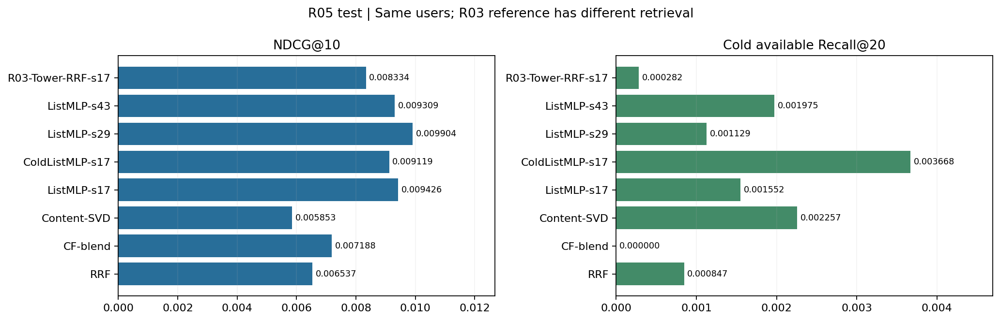

R05 新排序模型：实际训练与测试
R05 新排序模型训练曲线
4 次训练、35 轮。普通损失与冷样本加权损失的绝对值不直接比较；最佳轮次只看验证集。
R05 同候选池排序比较

ColdListMLP 只运行 seed 17；普通 ListMLP 有三个种子。R03 参考使用不同编码器与召回链路。
图片来源
·
完整报告
 4 次训练、35 轮。普通损失与冷样本加权损失的绝对值不直接比较；最佳轮次只看验证集。
4 次训练、35 轮。普通损失与冷样本加权损失的绝对值不直接比较；最佳轮次只看验证集。